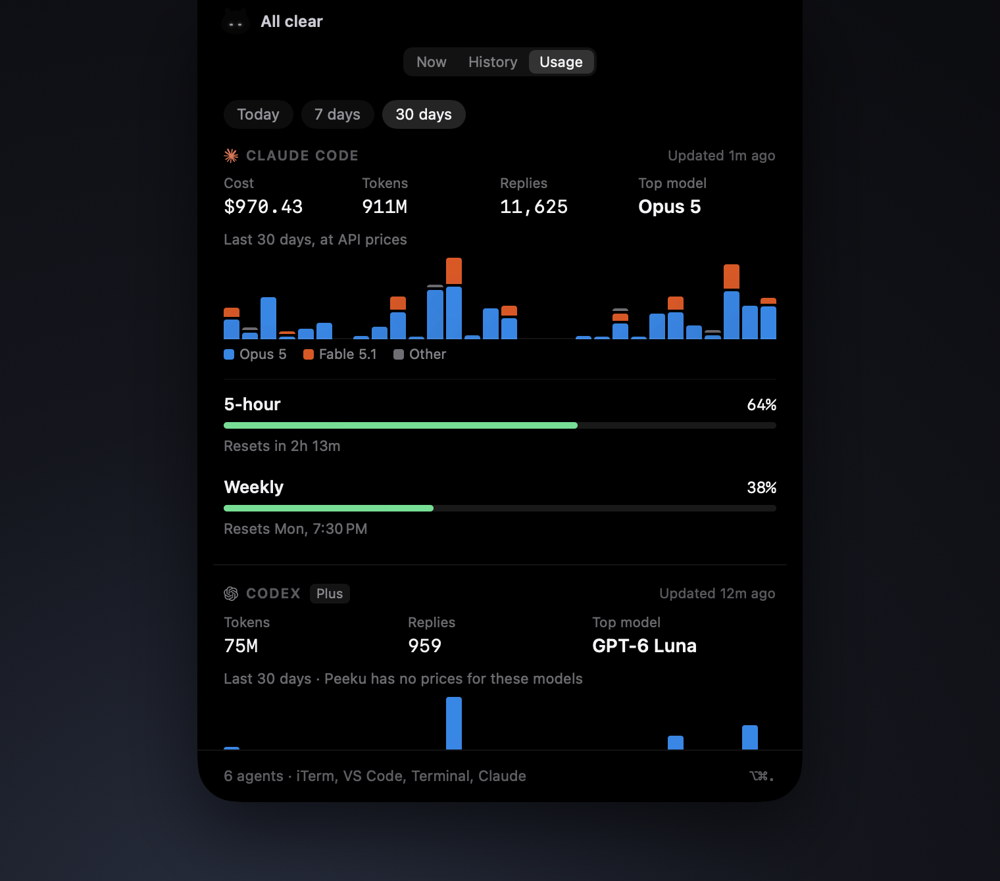

Switched to iTerm · Tab 1 · payments-api
Storefront · running on localhost:3001
One agent stopped to ask.
Ten minutes later, you notice.
Ten minutes later, you notice.
Meet Peeku. It lives in your notch.
Open Session jumps to the exact tab.
Your dev servers live there too.
Answer their prompts in one click.
Questions. Errors. Finished runs.
Every session, your limits and your commands.



Peeku
A tiny companion in your notch.
peeku.ahrefabhi.com